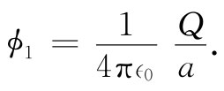
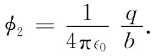
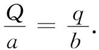

现在，我们想定性地讨论导体周围场的某些特性。若我们对之充电的导体不是一个球，而是在其上面有一针尖或尖端，如图6-14所示，那么尖端周围的场比起其他区域的场就会高出许多。从定性方面讲，原因是电荷企图尽可能广阔地铺开在导体表面，而尖端上的尖顶就是与大部分表面离得尽可能远的地方。板面上有些电荷被一直推至尖顶，尖顶上相对小量 的电荷仍能提供一个大的面密度 ，而一个高的电荷密度也就意味着刚好在外部的一个强电场。
图6-14 在导体上接近尖端处的电场十分强
图6-15 一个尖锐物体的场可以由处于相同电势的球来近似
要看出导体上那些曲率半径最小的地方场最高的一种办法，是考虑一个大球与一个小球被导线连接在一起的那种组合，如图6-15所示。它多少是如图6-14所示的那个导体的某种理想模型。导线对于处在球外的场影响甚小，它在这里的作用只是维持两球处在相同的电势。现在，究竟哪一个球在其表面上会有较大的场呢？如果左边的球半径为a并带有电荷Q，则它的势约为

（当然一个球的存在总会改变另一个球上的电荷分布，因而无论哪个球上的电荷都不是真正球对称的。但若我们感兴趣的只是对场的一种估计，那就可采用一个球形电荷的势。）若那个半径为b的小球带有电荷q，则它的势约等于

但ϕ1 =ϕ2 ，因而

另一方面，在表面上的场与面电荷密度成正比（见式5.8），而电荷密度又正比于电荷除以半径平方。因而我们得
所以，在小球表面处的场较高，场与半径成反比。
这一结果在技术上很重要，因为若电场太大，空气会被击穿。所发生的情况是：一个在空气中某处的游离电荷（电子或离子）被场所加速，倘若场很大，则该电荷会在打击另一个原子之前就获得了足够高的速率以致能够从该原子中打出一个电子来。结果，越来越多的离子产生了，它们的运动构成放电或火花。如果你要对一物体充电至一高电压而又不让它通过空气中的火花而使它本身放电，那你就必须保证该表面是平滑的，从而不会在任何一处出现异常强的电场。